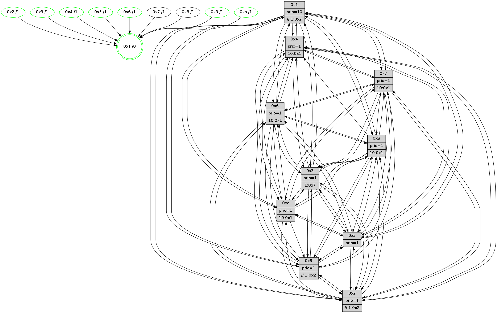

>> << IDX [start] -100 -25 -5 +0 +5 +25 +100 [910.001719952]
 Previous packets
----------------------------------------------------------------------
905.202943 beacon01(faad) #0 coord=01,02,03,04,05,06,07,0a,09,08 cycle=688.0ms assoc
-- color-indic=1 64 40 43
905.212924 beacon02(faad) #0 coord=01,02,03,04,05,06,07,0a,09,08 cycle=688.0ms assoc 64 d3 72
905.222924 beacon03(faad) #0 coord=01,02,03,04,05,06,07,0a,09,08 cycle=688.0ms assoc 64 a9 3f
905.232926 beacon04(faad) #0 coord=01,02,03,04,05,06,07,0a,09,08 cycle=688.0ms assoc 64 de d5
905.242927 beacon05(faad) #0 coord=01,02,03,04,05,06,07,0a,09,08 cycle=688.0ms assoc 64 a4 98
905.252926 beacon06(faad) #0 coord=01,02,03,04,05,06,07,0a,09,08 cycle=688.0ms assoc 64 2a 4f
905.262927 beacon07(faad) #0 coord=01,02,03,04,05,06,07,0a,09,08 cycle=688.0ms assoc 64 50 02
905.272932 beacon0a(faad) #0 coord=01,02,03,04,05,06,07,0a,09,08 cycle=688.0ms assoc 64 21 09
905.292932 beacon08(faad) #0 coord=01,02,03,04,05,06,07,0a,09,08 cycle=688.0ms assoc 64 d5 93
905.305100 [Hello(3): seq=579 sym=1,7,6,2,4,8,9,10,5 sysInfo= stat=1:7,1,15,0/7:7,10,3,6/6:1,2,6,1/2:15,4,8,9/4:12,5,11,5/8:15,1,4,0/9:6,2,6,9/10:6,2,3,1/5:7,15,1,10]
905.307828 [Color(4) seq=197 @0:0 prio=1 >10.@1,1.@2,1.@3,1.@7]
905.312863 [Color(5) seq=232 @0:0 prio=1]
905.314414 [Color(2) seq=224 @0:0 prio=1 >>1.@2,1.@3,1.@4]
905.317158 [Hello(6): seq=579 sym=2,3,5,4,7,9,8,10,1 sysInfo= stat=2:12,7,3,7/3:6,8,11,9/5:6,5,11,12/4:8,0,2,0/7:5,1,8,4/9:6,1,10,3/8:2,3,5,0/10:6,7,0,9/1:12,4,5,1]
905.323783 [Hello(1): seq=488 sym=4,2,9,5,10,3,8,6,7 sysInfo=coloring-mode-on,ColoringModeRequestCalled stat=4:6,13,11,0/2:9,7,8,10/9:13,6,9,4/5:3,5,15,4/10:14,6,6,1/3:14,7,5,2/8:2,3,5,0/6:11,8,4,9/7:11,9,10,11]
----------------------------------------------------------------------
905.991074 beacon01(faad) #0 coord=01,02,03,04,05,06,07,0a,09,08 cycle=688.0ms assoc
-- color-indic=1 64 fc 46
906.001056 beacon02(faad) #0 coord=01,02,03,04,05,06,07,0a,09,08 cycle=688.0ms assoc 64 6f 77
906.011055 beacon03(faad) #0 coord=01,02,03,04,05,06,07,0a,09,08 cycle=688.0ms assoc 64 15 3a
906.021058 beacon04(faad) #0 coord=01,02,03,04,05,06,07,0a,09,08 cycle=688.0ms assoc 64 62 d0
906.031058 beacon05(faad) #0 coord=01,02,03,04,05,06,07,0a,09,08 cycle=688.0ms assoc 64 18 9d
906.041057 beacon06(faad) #0 coord=01,02,03,04,05,06,07,0a,09,08 cycle=688.0ms assoc 64 96 4a
906.051057 beacon07(faad) #0 coord=01,02,03,04,05,06,07,0a,09,08 cycle=688.0ms assoc 64 ec 07
906.061061 beacon0a(faad) #0 coord=01,02,03,04,05,06,07,0a,09,08 cycle=688.0ms assoc 64 9d 0c
906.081063 beacon08(faad) #0 coord=01,02,03,04,05,06,07,0a,09,08 cycle=688.0ms assoc 64 69 96
906.092551 [Hello(8): seq=523 sym=5,2,3,4,9,6,7,10,1 sysInfo=hasWarning stat=5:10,3,12,11/2:9,14,8,3/3:12,8,8,11/4:1,14,6,6/9:7,7,3,0/6:13,4,4,9/7:4,2,0,0/10:4,5,1,0/1:15,13,6,0]
906.095655 [Color(3) seq=220 @0:0 prio=1 >1.@7]
906.097761 [Hello(10): seq=512 sym=6,2,3,8,9,5,7,4,1 sysInfo=hasWarning stat=6:10,6,9,3/2:0,14,7,3/3:9,11,3,7/8:5,2,1,0/9:8,8,9,2/5:13,0,11,11/7:15,4,8,5/4:8,2,15,6/1:10,9,11,1]
906.101530 [Color(10) seq=200 @0:0 prio=1 >10.@1,1.@2,1.@3,1.@5]
906.103245 [Hello(9): seq=523 sym=2,5,3,4,7,6,8,1 sysInfo=hasWarning stat=2:9,5,9,1/5:10,5,4,2/3:8,0,5,11/4:15,2,2,6/7:14,3,11,8/6:8,4,12,7/8:13,6,13,1/1:3,8,10,1]
906.105614 [Hello(7): seq=579 sym=2,3,5,6,4,9,8,10,1 sysInfo=hasWarning stat=2:6,14,4,11/3:5,5,12,11/5:8,14,15,14/6:4,11,11,5/4:12,2,10,0/9:6,9,4,1/8:9,13,4,0/10:6,12,2,1/1:7,0,8,0]
906.108683 [Hello(4): seq=579 sym=5,7,6,2,3,9,8,10,1 sysInfo= stat=5:11,11,9,10/7:5,7,11,5/6:9,0,7,9/2:12,8,3,8/3:3,9,5,7/9:1,13,13,6/8:11,3,11,10/10:5,4,15,8/1:3,3,9,1]
906.118689 [Color(9) seq=228 @0:0 prio=1 >>1.@2,1.@3,1.@4]
----------------------------------------------------------------------
906.779209 beacon01(faad) #0 coord=01,02,03,04,05,06,07,0a,09,08 cycle=688.0ms assoc
-- color-indic=1 64 e8 28
906.789191 beacon02(faad) #0 coord=01,02,03,04,05,06,07,0a,09,08 cycle=688.0ms assoc 64 7b 19
906.799192 beacon03(faad) #0 coord=01,02,03,04,05,06,07,0a,09,08 cycle=688.0ms assoc 64 01 54
906.809193 beacon04(faad) #0 coord=01,02,03,04,05,06,07,0a,09,08 cycle=688.0ms assoc 64 76 be
906.819191 beacon05(faad) #0 coord=01,02,03,04,05,06,07,0a,09,08 cycle=688.0ms assoc 64 0c f3
906.829193 beacon06(faad) #0 coord=01,02,03,04,05,06,07,0a,09,08 cycle=688.0ms assoc 64 82 24
906.839194 beacon07(faad) #0 coord=01,02,03,04,05,06,07,0a,09,08 cycle=688.0ms assoc 64 f8 69
906.849197 beacon0a(faad) #0 coord=01,02,03,04,05,06,07,0a,09,08 cycle=688.0ms assoc 64 89 62
906.869198 beacon08(faad) #0 coord=01,02,03,04,05,06,07,0a,09,08 cycle=688.0ms assoc 64 7d f8
906.880358 [Hello(6): seq=580 sym=2,3,5,4,7,9,8,10,1 sysInfo= stat=2:12,7,3,7/3:6,9,11,9/5:6,5,11,12/4:9,0,2,0/7:6,1,8,4/9:7,2,10,3/8:3,3,5,0/10:7,8,0,9/1:13,4,5,1]
906.883155 [Hello(1): seq=489 sym=4,2,9,5,10,3,8,6,7 sysInfo=coloring-mode-on,ColoringModeRequestCalled stat=4:7,13,11,0/2:9,7,8,10/9:14,7,9,4/5:3,5,15,4/10:14,6,6,1/3:14,7,5,2/8:3,3,5,0/6:11,8,4,9/7:12,9,10,11]
906.886508 [Color(4) seq=198 @0:0 prio=1 >10.@1,1.@2,1.@3,1.@7]
906.888251 [Hello(5): seq=580 sym=7,6,4,3,1,9,8,10,2 sysInfo=hasWarning stat=7:14,2,13,7/6:5,9,9,9/4:9,10,10,5/3:10,3,3,9/1:12,2,9,1/9:4,5,8,3/8:7,11,6,7/10:6,9,2,3/2:6,14,4,0]
906.891447 [Hello(2): seq=576 sym=4,5,7,6,3,9,8,10,1 sysInfo=hasWarning stat=4:2,10,1,4/5:1,2,1,0/7:0,2,13,8/6:5,14,7,7/3:9,12,4,5/9:5,1,6,3/8:7,15,3,7/10:4,12,6,8/1:8,0,8,1]
906.894285 [Hello(3): seq=580 sym=1,7,6,2,4,8,9,10,5 sysInfo= stat=1:8,1,15,0/7:8,10,3,6/6:2,2,6,1/2:0,5,8,9/4:13,6,11,5/8:0,1,4,0/9:7,3,6,9/10:7,2,3,1/5:7,0,1,10]
906.899537 [Color(2) seq=225 @0:0 prio=1 >>1.@2,1.@3,1.@4]
906.907777 [Color(5) seq=233 @0:0 prio=1]
----------------------------------------------------------------------
907.567341 beacon01(faad) #0 coord=01,02,03,04,05,06,07,0a,09,08 cycle=688.0ms assoc
-- color-indic=1 64 54 2d
907.577323 beacon02(faad) #0 coord=01,02,03,04,05,06,07,0a,09,08 cycle=688.0ms assoc 64 c7 1c
907.587323 beacon03(faad) #0 coord=01,02,03,04,05,06,07,0a,09,08 cycle=688.0ms assoc 64 bd 51
907.597322 beacon04(faad) #0 coord=01,02,03,04,05,06,07,0a,09,08 cycle=688.0ms assoc 64 ca bb
907.607324 beacon05(faad) #0 coord=01,02,03,04,05,06,07,0a,09,08 cycle=688.0ms assoc 64 b0 f6
907.617323 beacon06(faad) #0 coord=01,02,03,04,05,06,07,0a,09,08 cycle=688.0ms assoc 64 3e 21
907.627324 beacon07(faad) #0 coord=01,02,03,04,05,06,07,0a,09,08 cycle=688.0ms assoc 64 44 6c
907.637329 beacon0a(faad) #0 coord=01,02,03,04,05,06,07,0a,09,08 cycle=688.0ms assoc 64 35 67
907.657330 beacon08(faad) #0 coord=01,02,03,04,05,06,07,0a,09,08 cycle=688.0ms assoc 64 c1 fd
907.668477 [Hello(8): seq=524 sym=5,2,3,4,9,6,7,10,1 sysInfo=hasWarning stat=5:11,4,12,11/2:10,15,8,3/3:13,9,8,11/4:2,15,6,6/9:8,8,3,0/6:14,4,4,9/7:5,2,0,0/10:5,6,1,0/1:0,13,6,0]
907.671813 [STC(1) #0.115 tree-change,inconsistent-stability,stable,to-color d=0]
907.673387 [Hello(10): seq=513 sym=6,2,3,8,9,5,7,4,1 sysInfo=hasWarning stat=6:11,6,9,3/2:1,15,7,3/3:10,11,3,7/8:6,2,1,0/9:9,9,9,2/5:14,1,11,11/7:0,4,8,5/4:9,3,15,6/1:11,9,11,1]
907.675912 [Color(3) seq=221 @0:0 prio=1 >1.@7]
907.677950 [Color(10) seq=201 @0:0 prio=1 >10.@1,1.@2,1.@3,1.@5]
907.683440 [Hello(7): seq=580 sym=2,3,5,6,4,9,8,10,1 sysInfo=hasWarning stat=2:7,15,4,11/3:6,5,12,11/5:9,15,15,14/6:5,11,11,5/4:13,3,10,0/9:6,10,4,1/8:9,13,4,0/10:6,12,2,1/1:8,0,8,0]
907.688045 [Color(9) seq=229 @0:0 prio=1 >>1.@2,1.@3,1.@4]
907.689979 [Color(1) seq=261 @0:0 prio=10 >>1.@2,1.@3,1.@4]
907.692001 [Hello(4): seq=580 sym=5,7,6,2,3,9,8,10,1 asym= sysInfo= stat=5:12,12,9,10/7:5,7,11,5/6:10,0,7,9/2:13,9,3,8/3:4,9,5,7/9:1,14,13,6/8:11,3,11,10/10:5,4,15,8/1:4,3,9,1]
----------------------------------------------------------------------
908.355471 beacon01(faad) #0 coord=01,02,03,04,05,06,07,0a,09,08 cycle=688.0ms assoc
-- color-indic=1 64 90 23
908.365454 beacon02(faad) #0 coord=01,02,03,04,05,06,07,0a,09,08 cycle=688.0ms assoc 64 03 12
908.375455 beacon03(faad) #0 coord=01,02,03,04,05,06,07,0a,09,08 cycle=688.0ms assoc 64 79 5f
908.385454 beacon04(faad) #0 coord=01,02,03,04,05,06,07,0a,09,08 cycle=688.0ms assoc 64 0e b5
908.395454 beacon05(faad) #0 coord=01,02,03,04,05,06,07,0a,09,08 cycle=688.0ms assoc 64 74 f8
908.405455 beacon06(faad) #0 coord=01,02,03,04,05,06,07,0a,09,08 cycle=688.0ms assoc 64 fa 2f
908.415454 beacon07(faad) #0 coord=01,02,03,04,05,06,07,0a,09,08 cycle=688.0ms assoc 64 80 62
908.425458 beacon0a(faad) #0 coord=01,02,03,04,05,06,07,0a,09,08 cycle=688.0ms assoc 64 f1 69
908.435458 beacon09(faad) #0 coord=01,02,03,04,05,06,07,0a,09,08 cycle=688.0ms assoc 64 7f be
908.445459 beacon08(faad) #0 coord=01,02,03,04,05,06,07,0a,09,08 cycle=688.0ms assoc 64 05 f3
908.456695 [STC(8)->1 #0.115 tree-change,inconsistent-stability,to-color d=1]
908.458009 [Hello(1): seq=490 sym=4,2,9,5,10,3,8,6,7 sysInfo=coloring-mode-on,ColoringModeRequestCalled stat=4:8,14,11,0/2:10,8,8,10/9:14,7,9,4/5:4,6,15,4/10:14,6,6,1/3:15,7,5,2/8:4,3,5,0/6:11,8,4,9/7:12,9,10,11]
908.460982 [Hello(3): seq=581 sym=1,7,6,2,4,8,9,10,5 sysInfo= stat=1:8,2,15,0/7:9,10,3,6/6:2,2,6,1/2:0,6,8,9/4:14,6,11,5/8:1,1,4,0/9:7,4,6,9/10:7,3,3,1/5:7,1,1,10]
908.463766 [Hello(2): seq=577 sym=4,5,7,6,3,9,8,10,1 sysInfo=hasWarning stat=4:3,10,1,4/5:1,3,1,0/7:1,2,13,8/6:6,14,7,7/3:9,13,4,5/9:5,2,6,3/8:8,15,3,7/10:5,13,6,8/1:9,1,9,1]
908.467247 [STC(2)->1 #0.115 tree-change,inconsistent-stability,stable,to-color d=1]
908.468557 [STC(9)->1 #0.115 tree-change,inconsistent-stability,stable,to-color d=1]
908.470801 [Color(2) seq=226 @0:0 prio=1 >>1.@2,1.@3,1.@4]
908.473685 [Hello(5): seq=581 sym=7,6,4,3,1,9,8,10,2 sysInfo=hasWarning stat=7:14,2,13,7/6:6,9,9,9/4:10,10,10,5/3:10,4,3,9/1:13,3,10,1/9:5,6,8,3/8:8,11,6,7/10:7,10,2,3/2:6,14,4,0]
908.476149 [Hello(6): seq=581 sym=2,3,5,4,7,9,8,10,1 sysInfo= stat=2:13,8,3,7/3:7,10,11,9/5:7,6,11,12/4:10,1,2,0/7:7,1,8,4/9:7,3,10,3/8:4,3,5,0/10:8,9,0,9/1:14,5,6,1]
908.479194 [STC(5)->1 #0.115 tree-change,inconsistent-stability,stable,to-color d=1]
908.481204 [STC(6)->1 #0.115 tree-change,inconsistent-stability,stable,to-color d=1]
908.482434 [Color(5) seq=234 @0:0 prio=1]
908.485810 [TreeStatus(6)-.->1 #0.115 tree-change,inconsistent-stability,stable child=1]
908.488465 [Color(4) seq=199 @0:0 prio=1 >10.@1,1.@2,1.@3,1.@7]
----------------------------------------------------------------------
909.143600 beacon01(faad) #0 coord=01,02,03,04,05,06,07,0a,09,08 cycle=688.0ms assoc
-- color-indic=1 64 2c 26
909.153582 beacon02(faad) #0 coord=01,02,03,04,05,06,07,0a,09,08 cycle=688.0ms assoc 64 bf 17
909.163582 beacon03(faad) #0 coord=01,02,03,04,05,06,07,0a,09,08 cycle=688.0ms assoc 64 c5 5a
909.173584 beacon04(faad) #0 coord=01,02,03,04,05,06,07,0a,09,08 cycle=688.0ms assoc 64 b2 b0
909.183584 beacon05(faad) #0 coord=01,02,03,04,05,06,07,0a,09,08 cycle=688.0ms assoc 64 c8 fd
909.193583 beacon06(faad) #0 coord=01,02,03,04,05,06,07,0a,09,08 cycle=688.0ms assoc 64 46 2a
909.203585 beacon07(faad) #0 coord=01,02,03,04,05,06,07,0a,09,08 cycle=688.0ms assoc 64 3c 67
909.213589 beacon0a(faad) #0 coord=01,02,03,04,05,06,07,0a,09,08 cycle=688.0ms assoc 64 4d 6c
909.223588 beacon09(faad) #0 coord=01,02,03,04,05,06,07,0a,09,08 cycle=688.0ms assoc 64 c3 bb
909.233589 beacon08(faad) #0 coord=01,02,03,04,05,06,07,0a,09,08 cycle=688.0ms assoc 64 b9 f6
909.244745 [Hello(7): seq=581 sym=2,3,5,6,4,9,8,10,1 sysInfo=hasWarning stat=2:8,0,5,11/3:7,5,12,11/5:10,0,0,14/6:6,11,12,6/4:14,4,10,0/9:6,11,5,1/8:9,13,5,0/10:6,12,2,1/1:9,1,8,0]
909.248176 [Hello(4): seq=581 sym=5,7,6,2,3,9,10,1 sysInfo= stat=5:12,12,9,10/7:5,7,11,5/6:10,0,7,9/2:13,9,3,8/3:4,9,5,7/9:1,14,13,6/10:5,4,15,8/1:5,3,9,1]
909.252031 [Hello(9): seq=525 sym=2,5,3,4,7,6,8,1 sysInfo=hasWarning stat=2:10,7,9,1/5:12,7,5,2/3:9,1,5,11/4:0,4,2,6/7:14,3,11,8/6:10,4,13,8/8:15,6,13,1/1:4,9,11,1]
909.254425 [Hello(8): seq=525 sym=5,2,3,4,9,6,7,10,1 sysInfo=hasWarning stat=5:12,5,13,11/2:11,0,9,3/3:14,10,8,11/4:3,0,6,6/9:8,9,4,0/6:15,4,5,10/7:6,2,0,0/10:6,7,1,0/1:1,14,7,0]
909.258706 [Color(3) seq=222 @0:0 prio=1 >1.@7]
909.261081 [Color(9) seq=230 @0:0 prio=1 >>1.@2,1.@3,1.@4]
909.262718 [Hello(10): seq=514 sym=6,2,3,8,9,5,7,4,1 sysInfo=hasWarning stat=6:12,6,10,4/2:2,0,8,3/3:11,11,3,7/8:7,2,2,0/9:9,10,10,2/5:15,2,12,11/7:1,4,8,5/4:10,4,15,6/1:12,10,11,1]
909.266495 [Color(10) seq=202 @0:0 prio=1 >10.@1,1.@2,1.@3,1.@5]
----------------------------------------------------------------------
909.931733 beacon01(faad) #0 coord=01,02,03,04,05,06,07,0a,09,08 cycle=688.0ms assoc
-- color-indic=1 64 18 3e
909.941715 beacon02(faad) #0 coord=01,02,03,04,05,06,07,0a,09,08 cycle=688.0ms assoc 64 8b 0f
909.951715 beacon03(faad) #0 coord=01,02,03,04,05,06,07,0a,09,08 cycle=688.0ms assoc 64 f1 42
909.961715 beacon04(faad) #0 coord=01,02,03,04,05,06,07,0a,09,08 cycle=688.0ms assoc 64 86 a8
909.971716 beacon05(faad) #0 coord=01,02,03,04,05,06,07,0a,09,08 cycle=688.0ms assoc 64 fc e5
909.981715 beacon06(faad) #0 coord=01,02,03,04,05,06,07,0a,09,08 cycle=688.0ms assoc 64 72 32
909.991716 beacon07(faad) #0 coord=01,02,03,04,05,06,07,0a,09,08 cycle=688.0ms assoc 64 08 7f